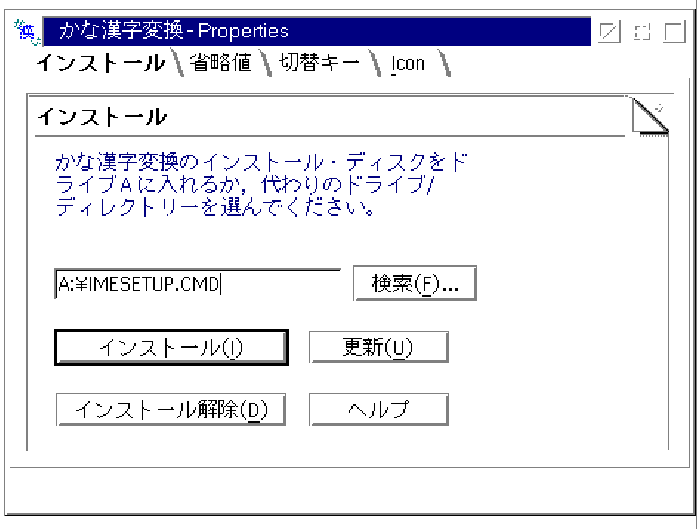
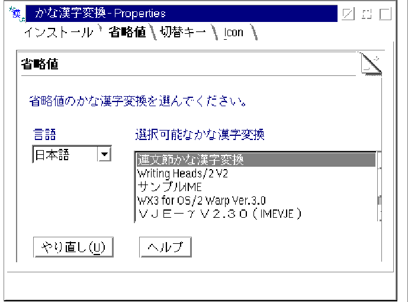
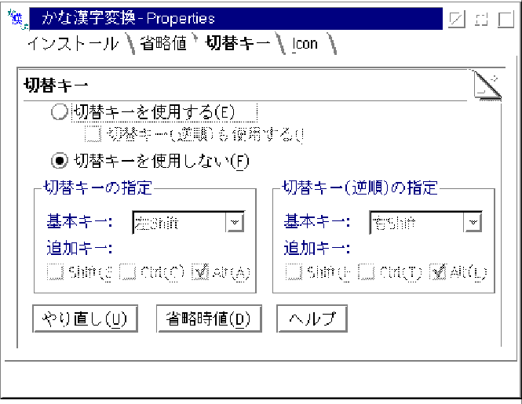

Language
PM Installation
Fullscreen Installation
DOS Installation
IMP consideration
The new IM is installed with language list. At this version the languages listed below can be acceptable:
This language is IM system unique language system, as the general language module (ULS) may not be available at Merlin time frame. When the general language mechanism becomes available, the IM system unique language system will be migrated to the general language mechanism. IM has the static table between language and codepages at current version. For example:
┌────────────────────┬──────────────────────────────┐│Language │codepage │ ├────────────────────┼──────────────────────────────┤ │JA │932 942 943 │ ├────────────────────┼──────────────────────────────┤ │EN │437 850 │ └────────────────────┴──────────────────────────────┘
Note: Though 850 is multilingual codepage, we maps codepage 850 to English language (EN). Because current user of IM is DBCS country and the static mapping will be removed when the general language mechanism is introduced into OS/2 system.
PM Installation
IM Setting object has following panels.
The User Interface of IME Installation is same as current PM installation. 
The setting panel of default IME is changed to select the default IME per language.
The setting panel of switch key definition is added newly.
Fullscreen Installation
As IMMON will be modified to support new IME which is installed by IM interface ImRegisterIME, IME does not need additional work for Fullscreen installation.
At new IM, the fullsceen installation is not supported.
The IME can not provide the IME unique user interface at Fullscreen session.
DOS Installation
IM System supports the routing mechanism that the DOS IME event is mapped to IM Interface.
If IME want to support the IME unique User Interface at DOS session, IME
need to install stub module additionally by using the VIMM mechanism. Please
refer to "DOS Support" section for the detail of the VIMM mechanism.
IMP consideration
In order to keep the 16 bit IME interface, the legacy IMP interface is kept as is. The IMP interface is routed to the IME listing mechanism of the IM system.